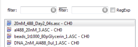

$$qf_commondoc_header.start$$ $$qf_commondoc_header.end$$
$$faq_start$$
What do the fit statistics mean, that the FCS-MaxEnt fit plugin calculates?
$$faq_answer$$
See Explanation of Fit Statistics for a detailed explanation
$$faq_end$$
$$faq_start$$
What do the fit weighting optins of the FCS-MaxEnt plugin mean?
$$faq_answer$$
See the help-page Fit Weighting for detailed information on the weighting of fits. Basically these allow to use an error estimate for each measured point on the correlation curve, which determines how much the data point should influence the final result.
$$faq_end$$
$$faq_start$$
How can I determine the parameters like wxy or γ for the MaxEnt-models?
$$faq_answer$$
The MaxEnt distributions are based on specific FCS fit models, as described in the main documentation. In addition to the actual MaxEnt-Distribution, these are parametrized by further values, such as the focus halfwidth $(w_{xy})$, the focus axial ratio $(\gamma)$, or the triplet-fraction $(\theta_{trip})$ and lifetime $(\tau_{trip})$. These values have to be determined externally e.g. by a standard FCS-fit, best using 2-3 diffusing components to model the actual distribution as good as possible. Such an FCS-fit can be done with the plugin FCS Curve Fit. See its documentation for further details.
$$faq_end$$
$$faq_start$$
How can I determine the MaxEnt-parameter αmem?
$$faq_answer$$
This plugin tries to determine the MaxEnt-distribution $(\vec{p}^\ast_\text{mem}=\{p_i\}_{i=1..N_\text{mem}})$ from the under-determined, MaxEnt-regularized optimization problem
$[ \vec{p}^\ast_\text{mem}=\argmin_{\vec{p}}\underbrace{\sum_{i=1}^N\left(\frac{\hat{g}_i-g(\tau_i;\vec{p}}{\hat{\sigma}_i}\right)^2}{=\chi^2}+\alpha_\text{mem}\cdot\underbrace{\sum\limits_{j=1}^{N_\text{mem}}p_j\cdot\log(p_j)}{\text{MaxEnt-regularization}} ]$
So the parameter $(\alpha_{mem})$ determines the relative weight of the two contributions to the full objective function of the optimization problem.
Generally the parameter $(\alpha_{mem})$ has these properties:
- The larger $(\alpha_{mem})$, the broader the distribution, as the regularization part is more important and this part pushes the solution towards a distribution with minimum information, i.e. a uniform distribution.
- The smaller $(\alpha_{mem})$, the more importance is assigned to the $(\chi^2)$ part and the sharper the peaks in the distribution will be (and the more unstable the fit will become, as at one point the regularization is effectively switched off and the optimization-algorithm can no longer find a solution for the over-determined problem.
$$startbox_note$$
As the two components $(\chi^2)$ and the regularization are not normalized in any way, this parameter will also depend on the actual dataset (although it will have the same properties for comparable datasets!). Therefore the parameter has to be determined for every measurement. Usually it is a good idea to start with a large value, e.g. $(\alpha_{mem}=1)$ and then step-wise lower it until the MaxEnt-algorithm results in a stable distribution which represents a good fit (see the main tutorial for details on this scheme).
$$endbox$$
$$faq_end$$
$$faq_start$$
How can I filter the list of raw data records, displayed in the plugin screen?
$$faq_answer$$
Above the list (rhs of the evaluation window), there are two fields, that allow to filter the displayed RDRs

You can enter a simple filter expression there. then only those files will be displayed, which contain the given expression. As an example, if your project contains a full FCCS measurement with three RDRs per measurement (ACF0,ACF1 and FCCS), but you only want to fit ACF0-RDRs with this evaluation, simply enter ACF0 into the left field. the rhs filter-field allows to exclude all records, that do NOT contain the specified filter string. In addition you can use regular expressions for the filter strings.
$$faq_end$$
$$faq_start$$
How can I create an overlay plot of several measured correlation cures?
$$faq_answer$$
Use the tools in the menu Tools | Overlay Plots of the evaluation editor.
See the Tutorial on overlay plots for a step-by-step description.
$$faq_end$$
$$faq_start$$
How do I perform a MaxEnt-Fit for FCS or DLS-data with QuickFit?
$$faq_answer$$
See the MaxEnt-FCS Tutorial for step-by-step instructions.
$$note:The plugin starts with a preset MaxEnt-model for confocal FCS. If you data was acquired with a different microscopy scheme, or you have DLS-Data, you can choose a different model at the top of the evaluation editor window to accomodate for this!$$
$$faq_end$$
$$faq_start$$
How do fit distribution-models to the obtained MaxEnt-distributions?
$$faq_answer$$
In recent version of the MaxEnt-FCS plugin, the MaxEnt-distributions are accessible over a general curve-interface to the FCS-raw data records. Therefore you can use the General Least-Squares Curve-Fit Plugin to fit any model function to these distributions.
$$see:Also see the MaxEnt-FCS Tutorial for step-by-step instructions.$$
$$faq_end$$